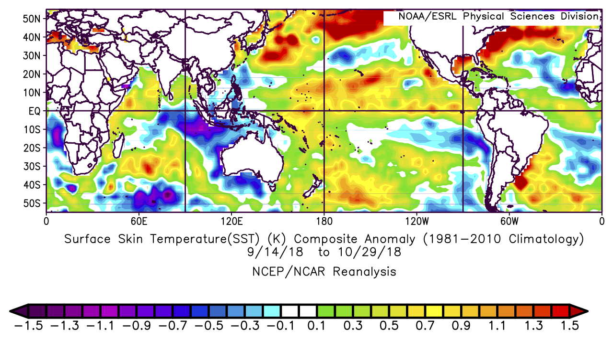

More Flooding in Paraguay
Posted on Wed 31 October 2018 in analysis
According to Floodlist, over 10000 people in Asunción and other parts of Paraguay have had to leave their homes due to severe flooding on the Lower Paraguay River. Since coauthors and I recently wrote a paper in Journal of Climate on the drivers of other floods in this region (DossGollin et al., 2018), I prepared a brief exploration of the recent event to see whether a similar set of mechanisms was at play.
El hombre, mis hijos —nos decía—, es como un río. Tiene barraca y orilla. Nace y desemboca en otros ríos. Alguna utilidad debe prestar. Mal río es el que muere en un estero...
—Hijo de Hombre, Augusto Roa Bastos
Some of my best memories come from Paraguay, a nation whose life is closely linked with its rivers. Historically they provided food, water, and navigation; today they provide nearly all of the country's electricity thanks to (sometimes controversial) hydropower projects at Yguazu and Yacyreta. However, the fact that most of Paraguay's lie along the Paraguay and the Paraná rivers means that the country is heavily exposed to flooding.
Before we dive into analyzing what has caused the most recent floods, a few notes:
- Si usted busca una versión de este blog en castellano, por favor haga clic aquí!
- I reference our paper a few times and I also cite some other academic papers. If you're interested but can't access a paper, please contact me and I will gladly share a pdf with you. Paywalls suck!
Lower Paraguay River Basin
It's helpful to refresh ourselves on the geography of this region. Figure 1(b) from our paper shows the Lower Paraguay River Basin; the capital city Asunción is shown with the letters ASU.
One relevant feature of this region is that it's extremely flat. This is shown by the contours (strictly speaking they show \(\log_{10}\) of elevation, in meters). As a consequence, rainfall that falls here tends to take a long time to drain once the soils are saturated. This means that above-average rainfall over a long time can cause flooding, even if none of the individual storms are particularly heavy.

Rainfall Patterns
Now we're ready to explore what happened during this event.
Let's start by plotting the rainfall observed over the past several months. This figure shows the rainfall, averaged in space over the region defined in the red box in the map above. We can see that between 14 September and 30 October of 2018, the region observed persistent and repeated heavy rainfall events. For context, the average rainfall in this region is just under 4 mm per day.

Now let's see what it looks like if we look on a map. Since the time from 14 September to now seems to be the most important (at time of writing they have data through 29 October), let's composite (average) over that time period. This data shows rainfall anomalies; this is a word I will be using a lot here and just means the difference between what was observed and the average expected given the seasonal cycle [1]. We can see that the region feeding the _Lower_ Paraguay River Basin got far hit especially hard [2].

Direct Drivers
It's worth thinking a bit about this rainfall pattern. In our paper (DossGollin et al., 2018), we found (consistent with many other studies) that intense rainfall in Paraguay is typically driven by the "South American Low-Level Jet", which channels moisture and energy (both are needed for rain storms) from the Amazon to South East South America. This low-level jet can either break past 25 degrees S, in which case it will favor rainfall in Northern Argentina and Uruguay ("Chaco jet event") (Salio et al., 2002), or it can turn to the East, in which case it will favor rainfall over Paraguay and SW Brazil ("No-Chaco Jet Events") (Vera et al., 2006). If you look at our figure 6, available on my GitHub page, you can see that the rainfall observed over the past six weeks looks a lot like the weather type (we labeled it number 4) that we identified as a key driver of the 2015-16 flooding.
To get a better sense of how the low-level jet behaved during this period, we can look at climate anomalies that persisted during this time period. The most interpretable variable to look at is the wind field. This plot shows the wind at 850, which is the lower part of the atmosphere; this part of the atmosphere carries most of the moisture and energy in the low-level jet, so this data tells us a lot about large-scale moisture transport by the atmosphere.

The most obvious feature here is that the region around (60W, 17.5S) shows strong wind anomalies -- this means that the low-level jet was much stronger during this period. This makes sense what we saw in the rainfall time series plot -- it's reasonable to assume that during most or all of the peaks in the rainfall time series, the low-level jet was active on that day and/or the previous day.
It's also interesting to note a few other features in this plot. First, if we look a little bit to the South-East of Paraguay -- say around (52.5W, 27.5S) -- we see that the wind anomaly, though week, is pointing towards Paraguay. This means that (on average) the circulation didn't allow the low-level jet to push through to Uruguay (this would be the "Chaco" jet event defined above). Further, air moving in this direction towards the Lower Paraguay River Basin supports convergence. Simply put, when two parcels of air near the bottom of the atmosphere run into each other, they will tend to go up (since the ground is below them they can't go down) and upward motion favors rainfall. There also seem to be some interesting things going on in the mid-latitudes; there appears to be a strong persistent low centered around (82.5W, 42.5S) that could be relevant here.
Indirect Drivers
That wasn't an exhaustive analysis (this is a blog!) but at least we saw that the rainfall we found was consistent with observations [3] of the low-level jet. In our Journal of Climate paper we found some interesting links between a few large-scale climate indices and rainfall in this region. These links encompass a lot of variability; in other words, there is a lot of noise between the large-scale factors we found and rainfall in the Lower Paraguay River Basin, which makes sense since it's a very small region.
The first place to look for signal on these sub-seasonal to seasonal time scales is the ocean. Since the specific heat (amount of energy required to raise the temperature) of water is much larger than the specific heat of air, heating anomalies in the ocean can drive persistent atmospheric circulations on these relatively short time scales [4].
There's lots that one could unpack here, but I'm going to focus on one particular interesting feature. In our paper we hypothesized that a dipole pattern in the South Central Atlantic -- we defined it as going from 30W to 10W and 15S to 40S -- could favor "No-Chaco" jet events over "Chaco" jet events and thus increase the probability of heavy rainfall in the Lower Paraguay River Basin.

Although we hypothesized specifically that this could happen during El Niño years during the summer (December-February), a dipole pattern like the one we identified was active during the current floods. The dipole during the current floods appears to be shifted somewhat to the South and East of our sketch (no more than five degrees or so). Nonetheless, it may have contributed to the rainfall that we observed.
Wrapping Up
Thanks for reading this far! A few more points in case you're interested
Further Research
It wouldn't be fair for me to write a whole post without leaving some space for future reading and future work!
- For more about the relationship between the South American Low-Level Jet and rainfall, see the academic literature such as Marengo et al. (2004), Boers et al. (2013), Salio et al. (2007) or this excellent tutorial.
- I've talked about the low-level jet, but it's part of a complex system that has been examined through a variety of other perspectives. Some people have considered this region as part of a Monsoon system (Marengo et al., 2012). Others such as Nielsen et al. (2018), Carvalho et al. (2004), and Carvalho et al. (2002) have looked at the South Atlantic Convergence Zone. All perspectives seem insightful at this point.
- The relationship identified between the dipole pattern in the Atlantic and the low-level jet remains a hypothesis (and a vaguely stated one at that). We don't have enough data yet to determine how strong this link is but maybe someday we will!
- Maybe that persistent low to the South-West of South America really matters here?
Thanks and Disclaimers
- This is a blog post, not an academic paper, so it's likely that I have made some mistakes in the analysis. If you find any, please contact me!
- Thanks to NOAA ESRL for making it easy to build plots!
- This is a living post and I plan to update it in the coming weeks as I get feedback from a few colleagues. You can find all versions of this post on my GitHub
Footnotes
A few bonus caveats and comments for the conscientious reader:
| [1] | Of course, if you're interested in how to calculate the seasonal cycle so that we can remove it to identify anomalies you will want to get into the specifics of how it's done. I believe that the web tool I am using estimates the seasonal cycle (aka "Climatology") by taking monthly averages (ie, average all Septembers, average all Octobers, etc). It's a pretty rough approach but tends to give results that are similar to more sophisticated methods. |
| [2] | This isn't the best rainfall data set. Since we're averaging over a relatively long time, we should be more or less covered. To be safe I looked at a few other rainfall data sets and found that this looked reasonable. |
| [3] | The data I am using comes from reanalysis, which means that it's not a direct observation. But good enough for now! |
| [4] | To suggest that the ocean only drives the atmosphere is a gross over-simplification -- the atmosphere also drives the ocean since they are coupled systems and there are many examples of the atmosphere driving ocean variability on these time scales. |
Bibliography
Niklas Boers, Bodo Bookhagen, Norbert Marwan, Jürgen Kurths, and José Marengo. Complex networks identify spatial patterns of extreme rainfall events of the South American Monsoon System. Geophysical Research Letters, 40(16):4386–4392, 2013. URL: http://doi.wiley.com/10.1002/grl.50681, doi:10.1002/grl.50681. ↩
Leila M V Carvalho, C Jones, and Brant Liebmann. The South Atlantic convergence zone: Intensity, form, persistence, and relationships with intraseasonal to interannual activity and extreme rainfall. Journal of Climate, 17(1):88–108, 2004. URL: http://journals.ametsoc.org/doi/abs/10.1175/1520-0442\%282004\%29017\%3C0088\%3ATSACZI\%3E2.0.CO\%3B2, doi:10.1175/1520-0442(2004)017<0088:TSACZI>2.0.CO;2. ↩
Leila M V Carvalho, Charles Jones, and Brant Liebmann. Extreme Precipitation Events in Southeastern South America and Large-Scale Convective Patterns in the South Atlantic Convergence Zone. Journal of Climate, 15(17):2377–2394, 2002. doi:10.1175/1520-0442(2002)015<2377:EPEISS>2.0.CO;2. ↩
J A Marengo, B Liebmann, A M Grimm, V Misra, Pedro L Silva Dias, Iracema F A Cavalcanti, Leila M V Carvalho, E H Berbery, T Ambrizzi, C S Vera, A Celeste Saulo, J Nogues Paegle, E Zipser, Anji Seth, and L M Alves. Recent developments on the South American monsoon system. International Journal of Climatology, 32(1):1–21, 2012. URL: http://doi.wiley.com/10.1002/joc.2254, doi:10.1002/joc.2254. ↩
Jose A Marengo, Wagner R Soares, Celeste Saulo, and Matilde Nicolini. Climatology of the Low-Level Jet East of the Andes as Derived from the NCEP–NCAR Reanalyses: Characteristics and Temporal Variability. Journal of Climate, 17(12):2261–2280, 2004. URL: http://journals.ametsoc.org/doi/abs/10.1175/1520-0442\%282004\%29017\%3C2261\%3ACOTLJE\%3E2.0.CO\%3B2, doi:10.1175/1520-0442(2004)017<2261:cotlje>2.0.co;2. ↩
David Marcolino Nielsen, André Luiz Belém, Edilson Marton, and Marcio Cataldi. Dynamics-based regression models for the South Atlantic Convergence Zone. Climate Dynamics, 19(10):716–27, 2018. URL: http://link.springer.com/10.1007/s00382-018-4460-4, doi:10.1007/s00382-018-4460-4. ↩
P Salio, M Nicolini, and A Celeste Saulo. Chaco low-level jet events characterization during the austral summer season. Journal of Geophysical Research, 2002. URL: http://doi.wiley.com/10.1029/2001JD001315, doi:10.1029/2001JD001315. ↩
Paola Salio, Matilde Nicolini, and Edward J Zipser. Mesoscale convective systems over southeastern South America and their relationship with the South American low-level jet. Monthly Weather Review, 135(4):1290–1309, 2007. URL: http://journals.ametsoc.org/doi/abs/10.1175/MWR3305.1, doi:10.1175/MWR3305.1. ↩
C Vera, J Baez, M Douglas, C B Emmanuel, J Marengo, J Meitin, M Nicolini, J Nogues Paegle, J Paegle, O Penalba, P Salio, A Celeste Saulo, M A Silva Dias, Pedro L Silva Dias, and E Zipser. The South American Low-Level Jet Experiment. Bulletin of the American Meteorological Society, 87(1):63–78, 2006. URL: http://journals.ametsoc.org/doi/10.1175/BAMS-87-1-63, doi:10.1175/BAMS-87-1-63. ↩
James Doss-Gollin, Ángel G Muñoz, Simon J Mason, and Max Pastén. Heavy rainfall in Paraguay during the 2015-2016 austral summer: causes and sub-seasonal-to-seasonal predictive skill. Journal of Climate, 2018. URL: http://journals.ametsoc.org/doi/10.1175/JCLI-D-17-0805.1, doi:10.1175/JCLI-D-17-0805.1. ↩ 1 2